東京大学 2009年 理科 第3問
問題
スイッチを1回押すごとに、赤、青、黄、白のいずれかの色の玉が1個、等確率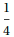で出てくる機械がある。2つの箱LとRを用意する。次の3種類の操作を考える。
(A) 1回スイッチを押し、出てきた玉をLに入れる。
(B) 1回スイッチを押し、出てきた玉をRに入れる。
(C) 1回スイッチを押し、出てきた玉と同じ色の玉が、Lになければその玉をLに入れ、Lにあればその玉をRに入れる。
(1) LとRは空であるとする。操作(A)を5回おこない、さらに操作(B)を5回おこなう。このときLにもRにも4色すべての玉が入っている確率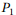を求めよ。
(2) LとRは空であるとする。操作(C)を5回おこなう。このときLに4色すべての玉が入っている確率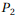を求めよ。
(3) LとRは空であるとする。操作(C)を10回おこなう。このときLにもRにも4色すべての玉が入っている確率を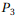とする。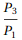を求めよ。
解答
(1)
取り出した玉のすべての順列をTuplesで列挙する。
ここで素数を用いて赤を2、青を3、黄を5、白を7として表す。
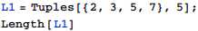
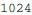
すべての色の玉が入っているもの(総積が2×3×5×7=210で割り切れるもの)をカウントする。
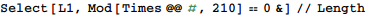
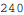
操作(B)も全く同様なので、求める確率は
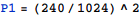
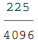
(2)
操作(C)を再現する関数fを定義する。
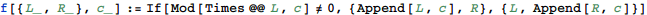
例えば、操作(C)によって「白赤白青黄」の順に玉が出た場合のLとRはFoldを使って以下のように計算できる。
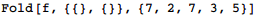
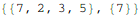
操作(C)を5回繰り返したとき、Lに入る玉のすべての順列L2は以下で計算できる。
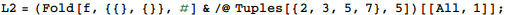
従って求める確率は
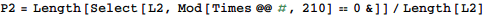
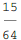
(3)
操作(C)を10回繰り返したときのLとRに入る玉の色の順列は
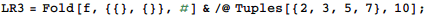
LにもRにも4色すべての玉が入っている確率は
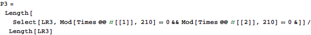
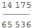
従って、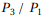は
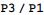
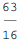
補足・感想
試行回数が具体的数値で決まっているので、コンピュータには解きやすい問題。
全パターンの列挙にTuplesを使って一瞬でできるのがMathematicaの強み。
また、色と素数を対応させて、積が素因数を持つかどうかでどの色が入っているかを判定できるようにして高速化した部分はうまくできたと自負している。